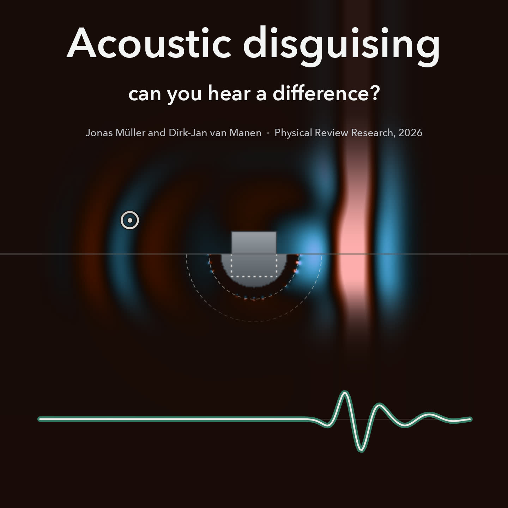
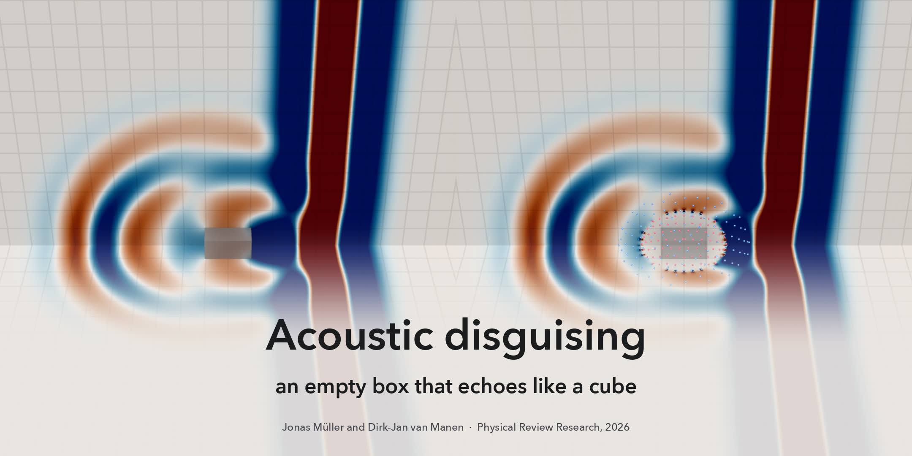
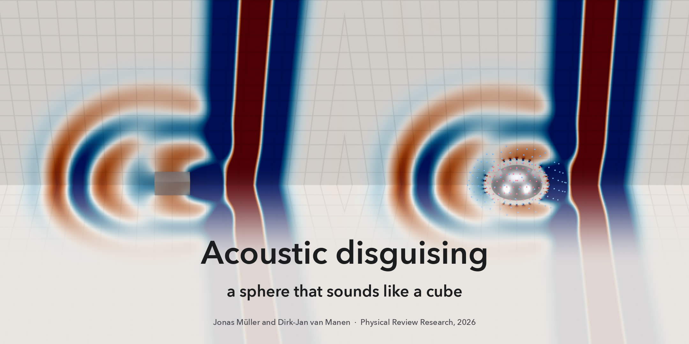

Acoustic Disguising
Manuscript Acoustic disguising — a unified framework for cloaking and holography by Jonas Müller and Dirk-Jan van Manen, submitted to Physical Review Research in 2026. Preprint on arXiv; source code on GitHub, archived on Zenodo at doi:10.5281/zenodo.20433700.
In short
Surround an object with a closed surface that records the incoming sound and emits a prepared response, and you can control how the object appears acoustically. The paper shows that cloaking, holography and disguising are one and the same operation. What changes is the response that drives the surface: the response of empty surroundings suppresses the sound field inside, so whatever sits there is cloaked; the scattering response of a target object creates a hologram that scatters sound like the target; and combining the two makes one object take on the acoustic signature of another, for example a sphere that scatters like a cube. This is demonstrated in three-dimensional simulations, and the required responses can also be retrieved from simulated reverberant data.



The films will be posted here when the article is published.
Abstract
Cloaking and holography—usually treated as distinct problems—are two limits of a single operation that we call acoustic disguising, realized here using immersive boundary conditions on a closed surface. Driving the boundary with homogeneous Green's functions suppresses any incident field inside the enclosed volume and cloaks unknown objects broadband; driving it with scattering Green's functions synthesizes a holographic scatterer indistinguishable from a target for arbitrary illuminations. Combining the two, using heterogeneous Green's functions, replaces the scattering signature of one object with that of another, transforming its acoustic identity. We demonstrate the framework in three-dimensional FDTD simulations driven by impulsive Green's functions, complemented by data-driven Green's-function retrieval, establishing a direct route to real-time 3D acoustic cloaking, holography, cloning, and disguising.
From the arXiv preprint, version 1.
How to cite
BibTeX for the preprint and for the archived code. Clicking a block selects it, ready to copy.
@misc{Muller2026_acoustic_disguising,
author = {M{\"u}ller, Jonas and van Manen, Dirk-Jan},
title = {Acoustic disguising: a unified framework for
cloaking and holography},
year = {2026},
eprint = {2606.08524},
archivePrefix = {arXiv},
primaryClass = {physics.app-ph},
url = {https://arxiv.org/abs/2606.08524}
}
@misc{Muller2026_acoustic_disguising_code,
author = {M{\"u}ller, Jonas and van Manen, Dirk-Jan},
title = {Acoustic Disguising: Green's function extraction and
hologram synthesis},
year = {2026},
publisher = {Zenodo},
doi = {10.5281/zenodo.20433700},
url = {https://doi.org/10.5281/zenodo.20433700},
note = {Software, all versions}
}